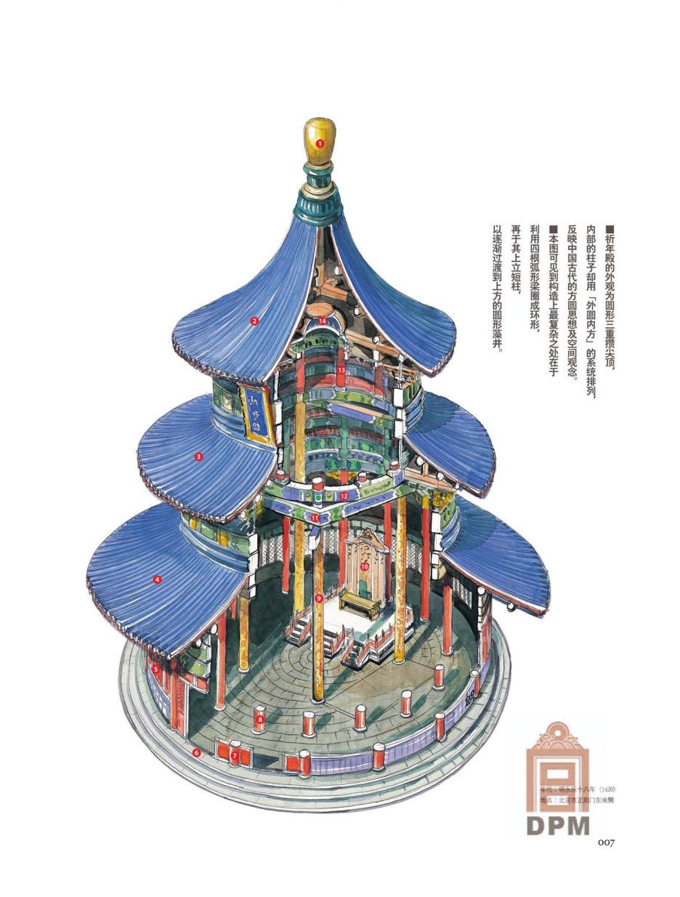
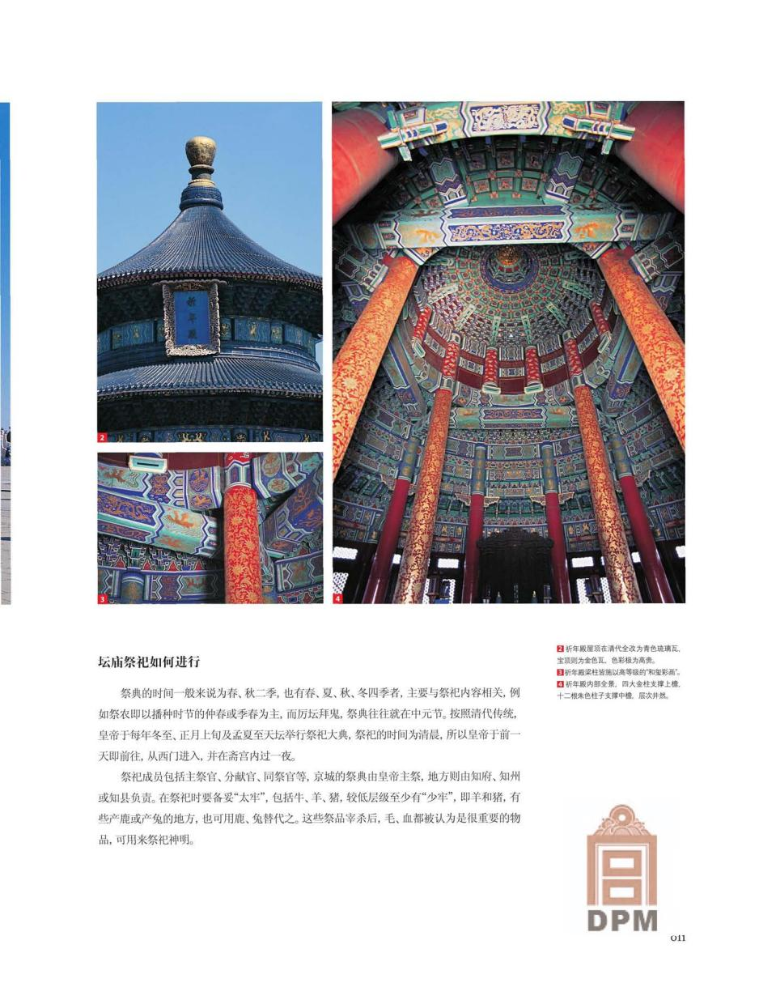

TIANTAN / ARCHITECTURAL REFERENCE AUDIT · 2026.10.28先读懂建筑，再绘制图解。
上一版仅依据文字概述绘制，缺少图纸与照片校准。这一页整理本次实际取得并查看的资料、可支持的建模判断，以及仍未取得的测绘依据。
完整资料记录与重做清单 01 / 平面、立面与剖面
来自中国提交、UNESCO 保存的天坛申遗档案。以下页码指 PDF 文件页序；它们是组群图与建筑立面资料，不能冒充完整的单体构件测绘。
02 / 构造剖绘与原刊照片

李乾朗 · 祈年殿剖透视故宫博物院《紫禁城》2009 年第 2 期，第 007 页。图示中央方井与外围圆形结构的联系；属于解释性剖绘，非标注尺寸的施工图。原刊 PDF ↗ · 版权归作者及出版机构，保留原页与署名。

宝顶、檐下、柱身与室内同刊第 011 页。用于比较真实构件层次、装饰分区与藻井；不可从透视照片直接读取精确尺寸。原刊 PDF ↗ · 原刊版权标识保留。
03 / 可放大核对的实景照片
本页照片仅缩小分辨率供浏览，未改变内容。拍摄年份不同，装饰现状仍需交叉核对。
04 / 上一版需要纠正的地方
| 部位 | 上一版问题 | 重做依据 |
|---|
| 整体与台基 | 殿身与台基比例、阶梯布局过于随意。 | 先用申遗立面与平面校准，再以全景照片复核。 |
| 屋顶 | 三层使用相似的曲面，缺少准确层间节奏。 | 分别提取上、中、下檐轮廓；核对檐间露出的构架层。 |
| 围护 | 连续红色面板，未表现隔扇门窗。 | 按实景照片恢复柱间门窗、槛框与分格。 |
| 构架与斗栱 | 遗漏方井、弧形梁、斗栱和藻井。 | 结合剖绘与室内、檐下照片建立可辨认的层次；未确认的尺寸保留为待核项。 |
| 主柱 | 只有 28 根总数有据，柱圈和高度为自定。 | 必须进一步取得可读的单体平面与构架剖面，才能声称实测比例。 |
| 细节 | 宝顶由圆柱堆叠，栏杆过于简单，彩画缺失。 | 以近景照片约束形态与装饰区划，细节必须附着在真实构件上。 |
05 / 精确测绘资料：已核实书目，尚未取得内页
书目已确认 · 图纸待取得《中国古建筑测绘大系·坛庙建筑：天坛》
王其亨主编，曹鹏编著；天津大学建筑学院、北京市天坛公园管理处编写。中国建筑工业出版社，2021 年。ISBN 9787112245604。
天津大学作者机构记录 ↗ ·
图书馆书目 ↗ 另已核实曹鹏、王其亨《图解北京天坛祈年殿组群营造史》（《新建筑》2010 年第 2 期，116–121 页）的书目。尚未取得全文，不把二手转述当作实测数据。
06 / 当前能支持到什么程度
这批资料足以纠正外形比例，并重做更丰富的建筑教学剖解。仍缺单体高分辨率尺寸图、柱圈实测数据、斗栱大样、隐蔽构架及完整四面近景，不能据此宣称精密测绘复原。